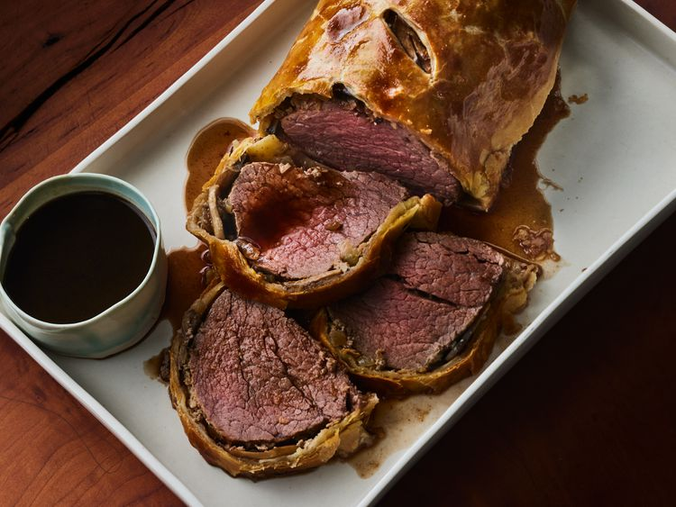

Beef Wellington

Description
Beef Wellington is a luxurious main dish made with beef tenderloin coated with paté and mushrooms, wrapped in puff pastry, and baked until the pastry is a beautiful golden brown. The classic English dish is named after Arthur Wellesley, 1st Duke of Wellington
Ingredients
- Beef tenderloin
- Pate
- Mushrooms
- Butter
- Veggie
- Pastry Dough
- Eggs
Steps
- Cover the beef with butter and bake until browned.
- Sauté the onions and mushrooms in butter. Mix the paté with butter and seasonings.
- Spread the paté mixture over the beef and top with the veggie mixture.
- Roll out the pastry dough and place beef in the center.
- Fold up and seal all the edges, place in a baking dish, cut a few slits in the top, and brush with egg yolk.
- Bake according to the instructions until the pastry is golden brown.
- Make the red wine sauce and serve alongside the Beef Wellington.